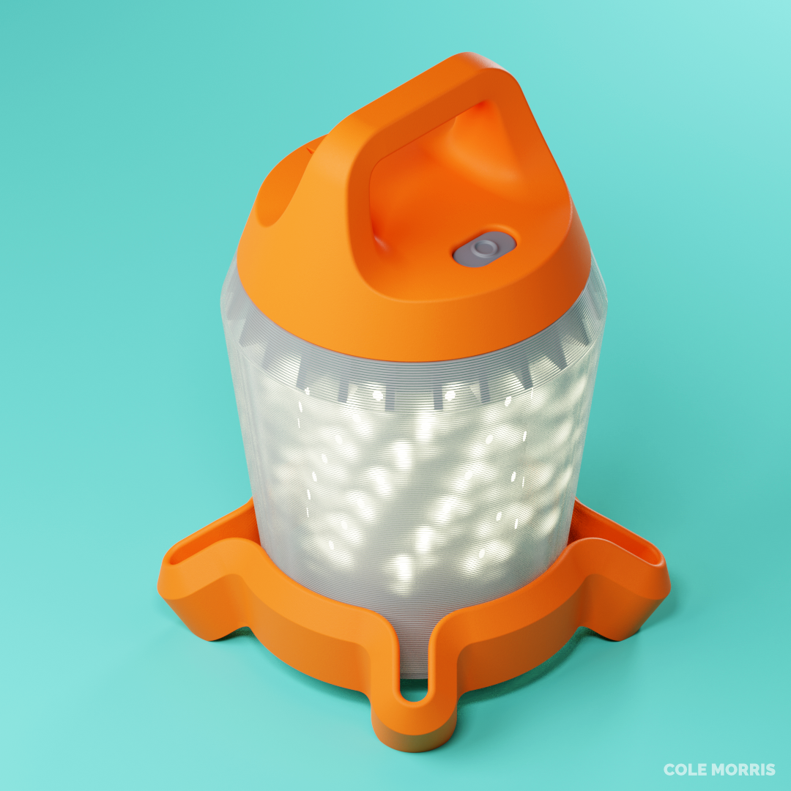

This camping lantern features omni-directional lighting to illuminate downwards when hanging in a tent.
The internal design allows for a very compact lantern. The integrated battery is held inside the LED housing. This keeps the center of gravity low while keeping the bottom of the diffuser free of obstruction. The overall height is about 5.5" including the handle.
This was a sophomore project to redo a previous lantern project of mine. I have since redone the surfacing and electronics to better represent the initial vision. USB charging and different lighting modes have been added since the initial prototype.